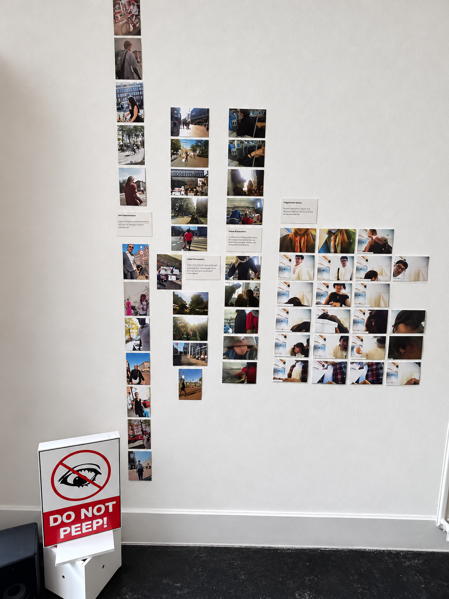
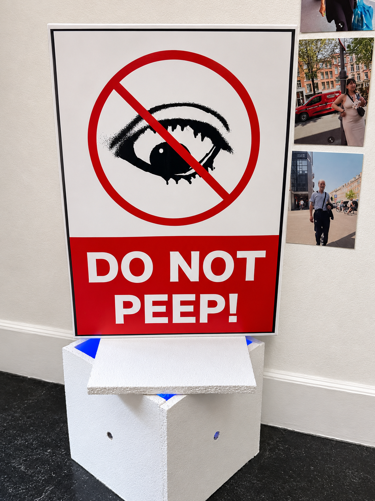
Test1 - Camera on Body
Experiment with capturing photos blindly -- without looking at the screen -- to see what kind of images i would get.
While some people didn’t notice the phone at all, others looked curious and stared at it, and a few even seemed amused or intrigued by the way i was wearing it.
Test 1 leads to the idea of next step:
Use camera to capture the most natural moments of people.
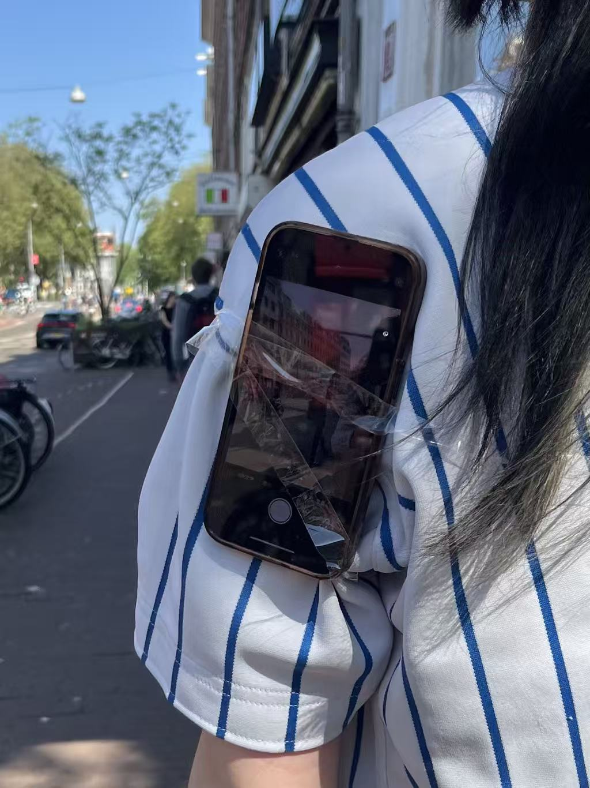
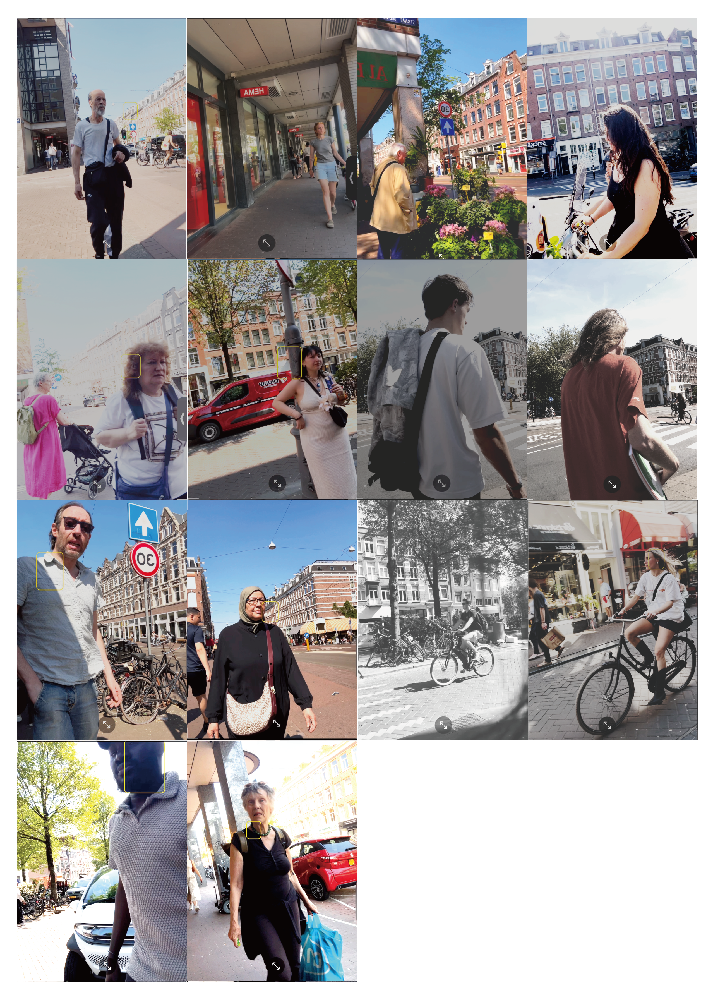
Test2 - Camera Test
I brought the camera out on the street and walked around the city center, taking photos of people and testing the image quality under different lighting conditons.
When people walked by me, they stared at my camera, curious about what i was holding. But when i took photos with this tiny camera, no one tried to avoid the lens -- most people didn’t even notice or realize it was a camera.
Test 2 leads to the idea of next step:
The next step could be developing a surveillance camera or a discreet wearable device that can take photos of people without them noticing.
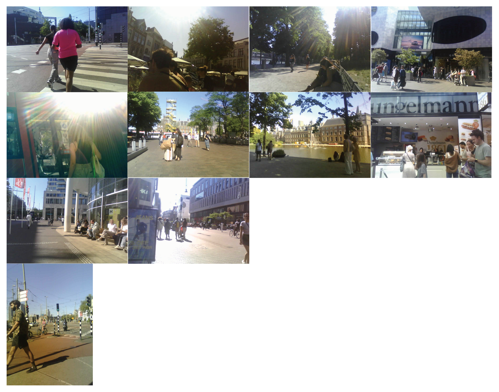
Test3 - Consent and without Consent
To observe how people behave differently when they are aware of a camera versus when they see photos taken without their consent.
Test3 leads to the idea of next step:
How to take photos of people in various situations, especially comparing their behavior when they are aware of a camera versus when they are not?
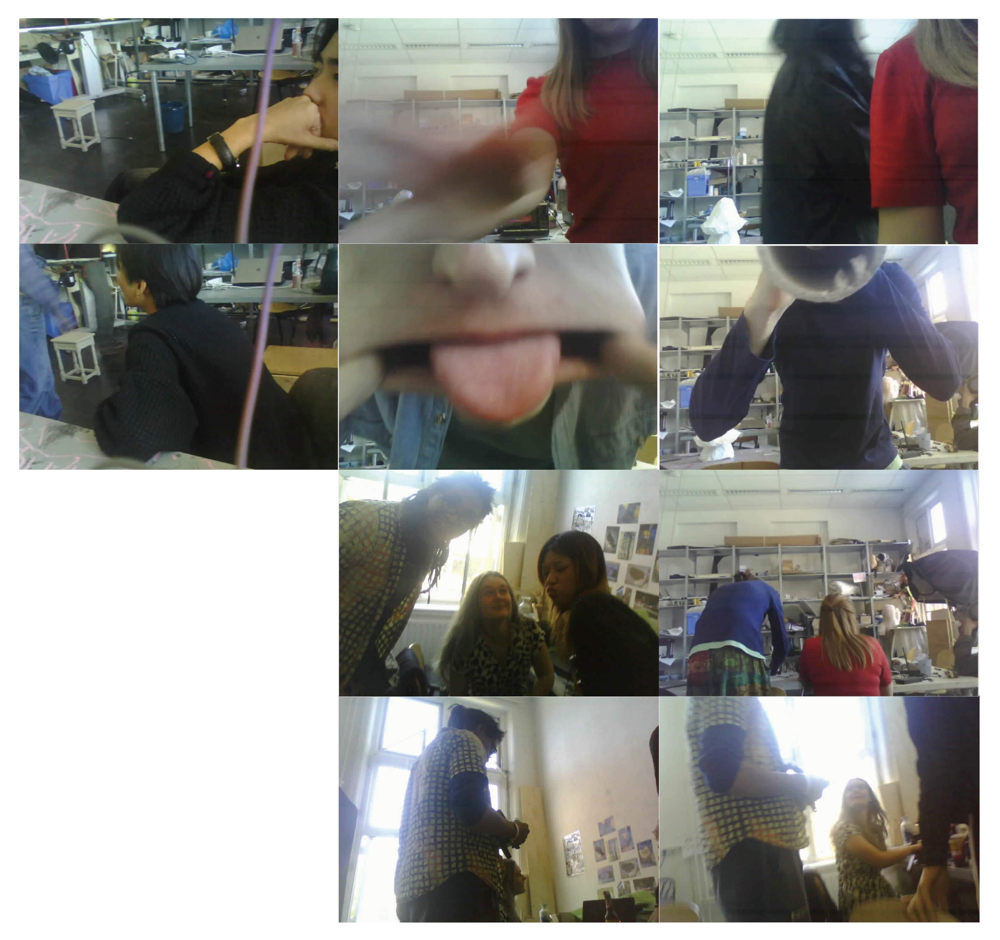
Test4 - Without Consent
Use a mysterious box, a ‘No Peeping, and a warning sound to capture people’s natural reactions at the moment they realize they’ve broken a rule.
Meanwhile, question how people unconsciously follow societal rules -- even when those rules make no sense.
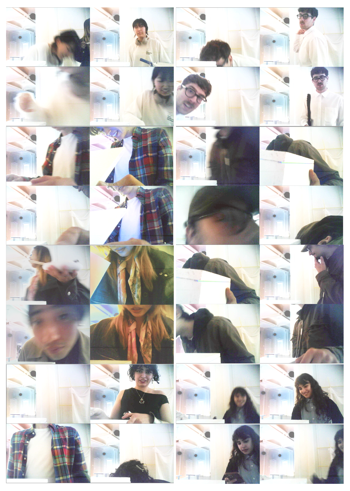
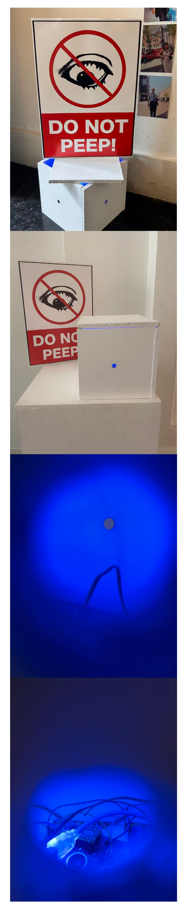
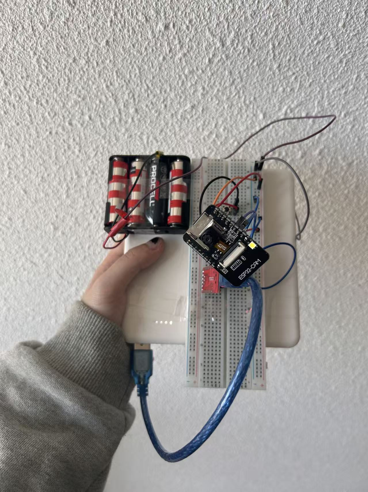
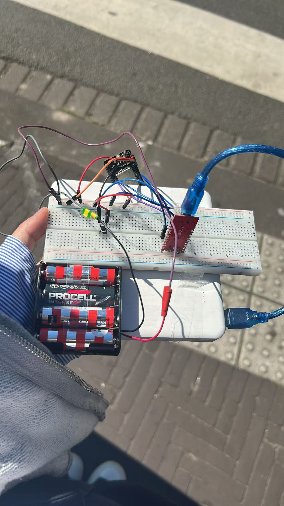
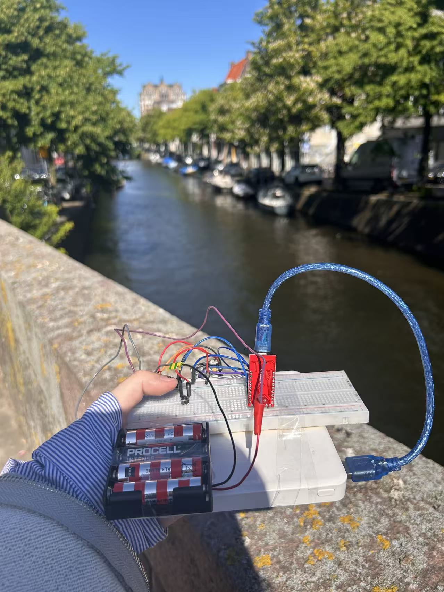